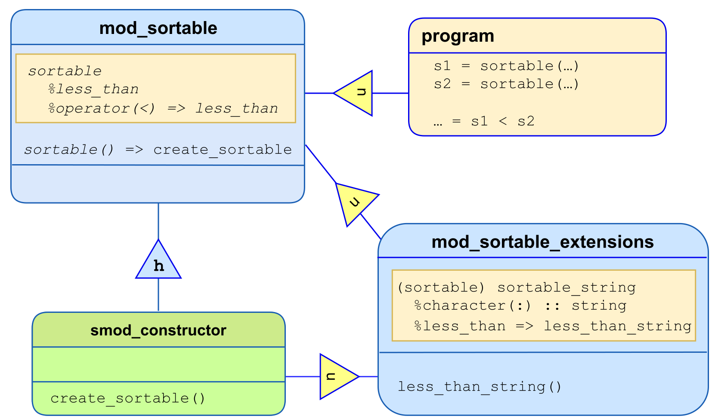

Object-oriented programming techniques#
Introduction: Establishing an explicit relationship between types#
The discussion on object-based program design in the previous chapter
was based on creating derived types that are comprised of objects of
other types (intrinsic or derived); this is also known as type
composition (not a Fortran term). For object-oriented programming,
the approach is that a closer relationship between two (or maybe more)
types can be established through language-defined mechanisms, on both
the levels of type definition and object declaration and use. Fortran
supports a single inheritance model, which will be outlined in the
following sections; runnable example codes are supplied in the
object_oriented subfolder of the Github
repository
Extension types#
As a starting point, consider the definition of a type, an object of which can quite generally represent a physical body:
type :: body
real :: mass
real :: pos(3), vel(3)
end type
:
type(body) :: my_basketball = body(1.5, [0.0, 0.0, 2.0], [10.0, 0.0, 0.0])
This might come along with procedures that impose a momentum change or a
change of mass on a body object:
pure subroutine kick(a_body, dp)
type(body), intent(inout) :: a_body
real, intent(in) :: dp(3)
a_body%vel(:) = a_body%vel(:) + dp(:) / a_body%mass
end subroutine
pure subroutine accrete(a_body, dm)
type(body), intent(inout) :: a_body
real, intent(in) :: dm
a_body%mass = a_body%mass + dm
end subroutine accrete
After writing lots of code that makes use of the above, imagine that you
now want to deal with objects that have the additional property of
electric charge. One could, of course, simply add another component to
the original body type, but in most cases this would invalidate
existing code which would need to be corrected, recompiled and retested.
Furthermore, all body objects would require the extra memory, which
for the existing codebase would simply be wasted. It is more convenient
and less intrusive to create a new type that is an extension of the
existing one (the parent type):
type, extends(body) :: charged_body
real :: charge
end type
An object of this type
type(charged_body) :: a_proton
would then have the following type components:
a_proton%massa_proton%posa_proton%vel
that are inherited from the parent type, and the additional type component
a_proton%charge
that was added in the definition of charged_body. Furthermore, it is
also possible to reference that part of the object corresponding to the
parent type, which is a subobject of just that type:
a_proton%body
Correspondingly, there are various manners in which the default structure constructor can be used to create a defined value:
type(body) :: a_mutilated_proton
! construct a_proton
a_proton = charged_body(mass=1.672E-27, pos=[0.0, 0.0, 0.0], &
vel=[0.0 ,0.0, 0.0]), charge=1.602E-19)
! alternative construction with the same result
a_mutilated_proton = body(mass=1.672E-27, pos=[0.0, 0.0, 0.0], &
vel=[0.0, 0.0, 0.0])
a_proton = charged_body(body=a_mutilated_proton, charge=1.602E-19)
Any derived type that does not have the sequence or bind(c)
attributes can be extended in the above manner; specifically, an
extension type can itself be extended. For any given „base“ type this
gives rise to a potential hierarchy of types that can be represented by
a directed acyclical graph:
{kind=link}
An object of type body is type compatible with both a_proton and
a_mutilated_proton, so any of these two can, for example, appear in a
call to the procedure kick.
Polymorphism#
Declaring entities with class#
By declaring an object with the class instead of the type specifier,
is is possible to defer the actual type that an object has to be
determined when the program executes, or even have the actual type
change during program execution. Such an object is designated as being
polymorphic. To be polymorphic, an object must fulfill one of the
following prerequisites:
it has the
pointerattribute,it has the
allocatableattribute, orit is a dummy argument (with or without a
pointerorallocatableattribute).
For example, the typed alllocation statement executed on a polymorphic allocatable object
class(body), allocatable :: a_polymorphic_body
:
allocate( charged_body :: a_polymorphic_body )
causes the object a_polymorphic_body that has the declared type
body to be allocated with the dynamic type charged_body; in
Fortran nomenclature, the latter term denotes what was referred to above
as „actual“ type.
Tipp
For an unallocated allocatable or a disassociated pointer the dynamic type is considered to be the same as the declared type, although this is only useful in very few contexts that do not require the object to be allocated or associated.
Run-time type and class identification#
Within the scope of the object’s declaration, only the components of its
declared type are accessible. Also, I/O operations on a polymorphic
object are not permitted, unless UDDTIO routines have been defined. One
way to obtain access to the complete object is to use a construct that
permits run-time type identification (not a Fortran term),
select type. For example, the I/O statements in
select type (a_polymorphic_body)
type is (body)
write(*,*) 'object of type body has value ', a_polymorphic_body
type is (charged_body)
write(*,*) 'object of type charged_body has value', a_polymorphic_body
class default
error stop 'type extension unsupported in this construct'
end select
are permitted, since inside the block for each type guard the object
is non-polymorphic and of the specified type. At most one type guard can
match the object’s type, and the corresponding statements are executed;
otherwise the class default section is executed (and the object
remains polymorphic there). A disadvantage of using select type is
that it needs to be appropriately updated whenever an additional type
extension is defined; apart from the maintenance effort this also
requires access to all source code that contain a relevant instance of
the construct. For this reason, type-bound procedures (to be discussed)
should be preferably used to gain access to additional type components.
For updates of the charge component of a charged_body object, one
now could consider the following:
subroutine recharge(a_charged_body, dq)
type(charged_body), intent(inout) :: a_charged_body
real, intent(in) :: dq
a_charged_body%charge = a_charged_body%charge + dq
end subroutine
However, invoking this subroutine in the usual Fortran 95 style will not
work for the variable a_polymorphic_body, since it violates the rule
that the dummy argument’s declared type must be type compatible with the
actual argument’s declared type. One can work around this by using a
select type construct with run-time class identification (not a
Fortran term), based on writing class guards instead of type guards:
select type (a_polymorphic_body)
class is (charged_body) ! new declared type for a_polymorphic_body
call recharge(a_polymorphic_body, dq=1.0e-5)
class default
write(*,*) 'info: object a_polymorphic_body was not modified.'
end select
The recharge procedure will then be invoked if the dynamic type of
a_polymorphic_body is charged_body or an extension of it. The object
remains polymorphic inside the class guard, only its declared type
changes to that specified in the guard. Unless the „lifted“ declared
type of interest is already otherwise known from the context, or
handling the class default fall-through is straightforward, this is
not in general a desirable way of dealing with class mismatches.
Tipp
It is permitted to mix type and class guards in a select type
construct; in that case, a type guard has precedence over a class guard
specifying the same type with respect to selection of the guarded
statements to be executed.
Unlimited polymorphic objects#
A special case of polymorphism is that an object can be unlimited
polymorphic. such an object, declared with class(*), can be of any
dynamic type (intrinsic type, extensible derived type, sequence or
bind(c) derived type), as illustrated by the following statements:
class(*), allocatable :: a_unlimited ! has no declared type, so any type is an extension
allocate( a_unlimited, source=2.5e4) ! dynamic type becomes real
select type ( a_unlimited )
type is (real)
write(*,*) 'a_unlimited is of intrinsic real type with value ', a_unlimited
end select
deallocate( a_unlimited )
allocate( a_unlimited, source=a_proton) ) ! dynamic type becomes charged_body
select type ( a_unlimited )
type is (charged_body)
write(*,*) 'a_unlimited is a charged_body with value ', a_unlimited
end select
Accessing the object’s data always needs a select type construct;
type guards in the construct can in this case might not only refer to
extensible types, but also to intrinsic types. However, for sequence
or bind(c) derived types, no type resolution is possible - these
always fall through to a class default guard, if present; use of
unlimited polymorphic objects to store values of such types is therefore
considered unsafe.
In this context, allocation with source= allocates the target object
to the source object’s dynamic type before copying its value to the
target object. If the source object’s data is not needed, mold= can be
used instead. Sourced allocation becomes a powerful tool, since the
dynamic type of the source object need not be known in the scoping unit
within which the allocation is executed.
Type components with the pointer or allocatable attribute can be
unlimited polymorphic, enabling the construction of generic and
potentially inhomogeneous container-like types. As an illustration of
this, a supporting type for the purpose of holding data targeted for
manipulation of other objects is presented; its definition (placed in
the module mod_utility_types) reads
type :: any_object
character(len=:), allocatable :: description
class(*), allocatable :: value(:)
integer, allocatable :: shape(:)
end type
where description will refer to the property that needs updating, and
value will contain the data to be used for the transaction. Because
the value component should be able to represent any type, it is
declared as being unlimited polymorphic. Because the value component
might hold data needed to produce an array of arbitrary shape, the
additional shape component is supplied, but its use is really only
necessary if objects of rank at least 2 must be dealt with. The
structure constructor for that type has been overloaded to work around
compiler bugs and make handling of scalar data easier. The following
example illustrates how to establish a simple interface for setting
components of a structure:
module mod_wtype
use mod_utility_types, only : initialize => any_object
type :: wtype
private
integer :: nonzeros = -1
real, allocatable :: w(:,:)
end type wtype
contains
subroutine setup_wtype(a_wtype, a_component)
! in-place setting to avoid memory bursts for large objects
type(wtype), intent(inout) :: a_wtype
type(initialize), intent(in), target :: a_component
integer :: wsize
real, pointer :: pw(:,:)
select case (a_component%description)
case ("nonzeros")
if ( allocated(a_component%value) ) then
select type ( nonzeros => a_component%value(1) )
type is (integer)
a_wtype%nonzeros = nonzeros
end select
end if
case ("w")
if ( allocated(a_component%value) .and. allocated(a_component%shape) ) then
wsize = size(a_component%value)
if ( wsize >= product(a_component%shape) ) then
select type ( w => a_component%value )
type is (real)
pw(1:a_component%shape(1), 1:a_component%shape(2)) => w
a_wtype%w = pw
end select
end if
end if
end select
end subroutine setup_wtype
:
end module
Notes:
Having this simple interface at the cost of significant additional setup code might at first sight appear frivolous; however, once type extension is used on a larger scale, setting or modifying further components in the conventional way becomes rather irksome without a concept like that above, especially if type-bound procedures with a simple and uniform interface must be implemented;
The object
a_wtyperemains unchanged in case an unsuitable value is provided fora_component. One could add explicit error handling, but for these examples this is considered an unnecessary complication;The permitted values for the
initializeobject should be documented for each procedure that takes such an object;Because access to
a_componentwithinselect typeis via a type component, one is obliged to introduce an associate name for the latter. The language rules only permit omitting the associate name for named variables, and subobjects are not named variables;A rank-changing pointer assignment is used to transform the rank-1
a_component%valuearray to an object that can be assigned to a rank-2a_wtype%warray; this works because the right-hand side is a rank-1 object; for rank-2 and higher the rank-changing pointer assignment will only work if the target assigned to is a simply contiguous array designator (a topic not covered here). Note that in this context, thereshapeintrinsic cannot be used because it requires the size of itsshapeargument to be a constant.
The program invoking the setup_wtype procedure might do so as follows,
to set up a wtype object:
use mod_wtype
type(initialize) :: c_nz, c_w
type(wtype) :: my_wtype
integer :: i, j
integer :: ndim
ndim = ...
associate ( my_data => [ ((real (max(0, min(i-j+2, j-i+2))), j=1, ndim), i=1, ndim) ] )
c_nz = initialize("nonzeros", count(my_data /= 0))
c_w = initialize("w", my_data, [ ndim, ndim ] )
end associate
call setup_wtype(my_wtype, c_nz)
call setup_wtype(my_wtype, c_w)
Type-bound procedures (TBP)#
To resolve the class mismatch issues arising from the use of polymorphic
objects, one needs a language mechanism for making a run-time decision
on a procedure invocation that depends on the dynamic type of a
polymorphic object. This can be achieved by binding a procedure to a
type in the type definition via a procedure statement in the type’s
contains part.
For the type body, the augmented type definition reads
type :: body
real :: mass
real :: pos(3), vel(3)
contains
procedure :: update => update_body
end type
This does not impact how the structure constructor is used; for this,
only the specifications before the contains statement are relevant. To
establish a simple and uniform interface for object updates, the
procedure update_body makes use of the any_object type discussed
earlier, which in view of the context is locally renamed to change:
subroutine update_body(a_body, a_change)
class(body), intent(inout) :: a_body
type(change), intent(in) :: a_change
if ( allocated(a_change%description) .and. allocated(a_change%value) ) then
select case ( trim(a_change%description) )
case ('mass')
select type ( delta => a_change%value(1) )
type is (real)
call accrete(a_body, delta)
end select
case ('momentum')
select type ( delta => a_change%value )
type is (real)
if ( size(delta) >= 3 ) call kick(a_body, delta(1:3))
end select
case ('position')
select type ( delta => a_change%value )
type is (real)
if ( size(delta) >= 3) a_body%pos = a_body%pos + delta(1:3)
end select
end select
end if
end subroutine
In its interface, the passed object a_body must be declared to be
a polymorphic scalar, with its declared type being the one the procedure
has been bound to. The implementation reuses existing code where
possible (very simple in this example, but this is of course not
generally the case), to avoid the need for extensive revalidation.
Invocation of the procedure could be done in the usual manner, but the preferred style, especially in the case that the actual argument is polymorphic, is to do it through the object itself:
Type(change) :: dx
:
dx = change(description='mass', value=[0.0, 2.0, 0.0])
call my_basketball%update(dx) ! invokes update_body(my_basketball, dx)
For polymorphic objects, the procedure update_body will be invoked if
the dynamic type of the object is body (this might not be true if the
dynamic type is an extension, as we shall see).
Tipp
The invocation can also be done with non-polymorphic objects; in this case, the binding could (in principle) be determined at compilation time, potentially saving some call overhead. Note that the passed object dummy is not permitted to be allocatable or a pointer, which facilitates this usage.
So far this is not particularly interesting; the key thing is what
happens once we turn to type extensions. For example, to enable
modification of the charge component (in addition to that of other
components) of an object of dynamic type charged_body, it is possible
to override the parent type’s bound procedure:
type, extends(body) :: charged_body
real :: charge
contains
procedure :: update => update_charged_body
end type
with the procedure defined as follows:
subroutine update_charged_body(a_body, a_change)
class(charged_body) :: a_body
type(change) :: a_change
if ( allocated(a_change%description) .and. allocated(a_change%value) ) then
select case ( trim(a_change%description) )
case ('charge')
select type ( delta => a_change%value(1) )
type is (real)
a_body%charge = a_body%charge + delta
end select
case default
call a_body%body%update(a_change)
! assure that a change to a parent component is dealt with
end select
end if
end subroutine
The overriding procedure must use the same interface as the overridden
procedure, except that the passed object is declared to be of the
extended type; even the argument keywords must be the same. Once the
override has been defined, the call through an object of dynamic type
charged_body will be dispatched to update_charged_body:
type(change) :: dc, dp
class(body), allocatable :: my_polymorphic_body
my_polymorphic_body = charged_body(mass=1.5, pos=[0.,0.,0.], &
vel=[2.,0.,0.], charge=2.41e-5)
! the above statement auto-allocates the left hand side
dc = change(description='charge', value=5.0e-6)
dp = change(description='momentum', value=[-1.0,1.0,0.0])
! both the following dispatch to update_charged_body
call my_polymorphic_body%update(dc)
call my_polymorphic_body%update(dp)
Notes:
for the above example, direct invocation of the procedure
update_charged_bodyis not possible (as already noted earlier);the second TBP call illustrates the invocation of the parent object update from
update_charged_body. Without this, changes that impact the parent object would not be done. By implementing this consistency of behaviour, the programmer assures that the inheritance hierarchy adheres to the Liskov substitution principle;to enforce using the TBP calls in a use association context, the module procedures that implement them can be made
private. The accessibility of the TBP itself is determined by the attribute for it (default ispublic) in the type definition;the programmer can prevent overriding of a binding by declaring it to be
non_overridable; its implementation then is regarded as valid for all conceivable extension types.
Abstract types and interfaces#
The sortable type used for demonstrating the sortable_list
functionality in the
object-based chapter’s
example was set up as a fixed container-like type. It is desirable to be
able to use the list machinery more flexibly i.e., for any type that
supports the „less-than“ comparison. This can be achieved by introducing
an abstract type
type, abstract :: sortable
contains
procedure(compare), deferred :: less_than
! ... more to follow
end type
with a deferred binding. It is not possible to create an object whose dynamic type is abstract, or a non-polymorphic object of abstract type. For this reason, the deferred binding cannot represent an existing procedure, but is characterized by an abstract interface:
abstract interface
pure logical function compare(s1, s2)
import :: sortable
class(sortable), intent(in) :: s1, s2
! dispatch is via the first argument
end function
end interface
The import statement is required to give the interface access to the
type defined in its host. Furthermore, an override of the structure
constructor will be needed
interface sortable
procedure :: create_sortable
end interface
that permits creation of polymorphic sortable objects. The details of
this will be described later (since, indeed, a devil lurks in these
details). Note that the above combined use of abstract types and
interfaces is also known under the (non-Fortran) term interface
class.
This framework permits the programmer to implement the following programming technique, which is also known as dependency inversion (not a Fortran term):
Any machinery that makes use of polymorphic
sortableobjects is made to only refer to the above abstractions. For example, the definition of thesorted_listtype could be adapted to readtype, public :: sorted_list private class(sortable), allocatable :: data ! changed to refer to abstract type type(sorted_list), pointer :: next => null() contains final :: delete_sorted_list end type
The advantage of this is that no change to the preexisting machinery will be needed whenever a programmer decides to add an extension type as outlined in 2. below.
For a concrete realization of a
sortableobject, the programmer needs to create a type extension, for exampletype, public, extends(sortable) :: sortable_string character(len=:), allocatable :: string contains procedure :: less_than => less_than_string end type
including an obligatory implementation
less_than_stringof an overriding TBP for the deferred binding. The constructor function (promised earlier, but not yet delivered) also needs to be updated to enable creation of objects of the extended type.
Generic type-bound procedures and operator overloading#
As a convenience, use of an overloading for the comparison operator „<“ can be provided by creating a generic type-bound procedure:
type, abstract :: sortable
contains
procedure(compare), deferred :: less_than
generic :: operator(<) => less_than
end type
which means that when a statement involving a comparison expression
class(sortable), allocatable :: s1, s2
s1 = sortable( ... )
s2 = sortable( ... )
if ( s1 < s2 ) then
...
end if
is executed, the overridden type-bound procedure bound to the first
operand will be invoked to evaluate the expression. It is not necessary
to re-specify the generic clause in any type extensions; the dispatch
will automatically select the overridden procedure.
Named generic type-bound procedures that do not overload existing operations can also be defined; an example for this is given in the section Functions with parameters. The rules for generic resolution work similar as for nonpolymorphic generic procedure interfaces, with the additional restriction that polymorphic dummy arguments that are related by inheritance cannot be distinguished for the purpose of compile-time resolution to a specific procedure.
Completing the dependency inversion#
Discussion of structural dependencies#
When implementing the above concept, typically a separate module, say
mod_sortable_extensions, is created for some or all of the extension
types of sortable. The motivations for this can be:
avoid recompilation of any machinery that makes use of the
mod_sortablemodule;the source code of
mod_sortablemight not be readily modifiable;prevent
mod_sortablefrom turning into a monster module in case large concepts are implemented through extension types, or many extension types are created.
The implementation of the constructor will need to use associate
mod_sortable_extensions since it needs to be able to create objects of
the types defined there. On the other hand, the interface to the
constructor needs to be visible in mod_sortable, since the machinery
that depends on it must be able to call it. As a consequence, one would
end up with a circular use dependency between the two modules, which
is prohibited.
Using submodules to break dependency cycles#
To deal with such a situation (among others), the concept of submodule is available. This is a type of program unit that serves as an extension to an existing module (or submodule), to which it has access by host association. Furthermore, submodules allow the programmer to separate interfaces from implementations; the former are defined in the parent program unit (i.e., the program unit of which the submodule is an extension), the latter in the submodule itself.
For the constructor function, the following interface block can be
declared in mod_sortable:
interface
module function create_sortable(init) result(r)
class(sortable), allocatable :: r
type(initialize), intent(in) :: init
end function
end interface
The special notation module function (or module subroutine for a
subroutine) tells the compiler that the implementation is deferred to a
submodule.
Notes:
the above interface requires no reference to any entities contained in
mod_sortable_extensions;consistent with this, the variable representing the function result is an allocatable polymorphic object of the abstract type;
an
importstatement is not obligatory in separate module procedure interfaces, although it is permitted (compiler support assumed!), primarily for the purpose of fine-grain control of host access;the type
initializeis, again, a renamed version of theany_objecttype referred to earlier.
Implementation of the constructor#
The submodule containing the implementation then reads as follows:
submodule (mod_sortable) smod_constructor
contains
module procedure create_sortable
use mod_sortable_extensions, only : sortable_string
if ( allocated(init%description) .and. allocated(init%value) ) then
select case (init%description)
case ('sortable_string')
select type ( value => init%value(1) )
type is (character(len=*))
allocate( r, source=sortable_string(value) )
end select
end select
end if
end procedure
end submodule
Notes:
The interface for the separate module procedures is omitted, since it can be deduced from its specification in the parent module. However, alternative syntax exists that replicates the interface (but this is not shown here);
the effect of the
onlyclause is to suppress use access to any entity of the parent program unit (which would be indirectly established). This is because use association overrides host association, which may cause undesirable side effects;submodules additionally can contain specifications (before the
containsstatement), as well as local submodule procedures. All these are only accessible from the submodule (and its descendant submodules, if any);the naming scheme for a submodule always references the direct parent. For submodules of submodules, the scheme is
submodule (<parent module>:<parent submodule>) <submodule_name>and the names of submodules of a given module must be unique.
Diagramming the dependencies between program units#
The following diagram shows the use and host association relationships between the modules (blue boxes), the submodule (green box), and a main program unit (orange box) for this example:
{kind=link}
The small triangles in the diagram refer to use („u“) association and
host („h“) association, respectively. The separation of the
constructor’s interface from its implementation leads to avoidance of
circular use references (the lower two „u“ triangles in the diagram).
The compilation order for separate files would be:
mod_sortableprogramandmod_sortable_extensions, independentlysmod_constructor